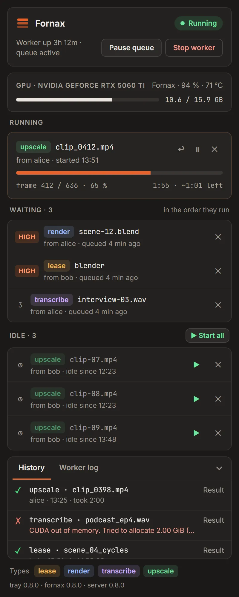

A fair queue
One job at a time, in order. Interactive work goes first with high; batches wait as idle until you start them.
- Every job carries the name of the agent that sent it.
queue_statussays who runs and who waits ahead of you.get_jobwaits for a change instead of asking again and again.
